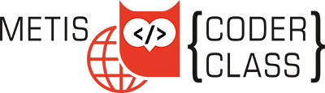

REAL LIFE REALITY
There was a boy a long, long time ago, in the same galaxy as now.
That boy was me, and oh boy, i can tell you that boy is gone.
Anyways, im not here to tell you about the past...
im here to tell you whats to come.
I made this website to represent my work...(i am happy about*).
That work can vary alot, from games to graphic design.
Anything i want to share with the world will be on here.
Well i probably should start with myself.
I am callled Šime Jannink, born and grew up as Dutch.
Born in december 2005 i have never experienced a hot birthday.
I describe myself as a average person, not mentally but physically.
Not too long, not short, neither fat and without anorexia.
My hobbies are Coding, Programming and Writing online languages.
I do have other things i am in to, like Batminton and Gaming.
I am open for new ideas, just to explore new things.
Snowboarding was fun, broke my wrist on the first day,
but that doesn't stop me! -16th of March, 2022
I am currently schooled at Metis Montessori Lyceum.
The school does really well in inspiring me, in some things.
Programming is very fun and they inspired me to start.
The school is very cool and i think its a good school.
My mom is Croatian and My dad is as Dutch as you can be.
That the reason i speak Dutch, Croatian and English.
If i would have to give myself a nationality it would be Internet.
Haha very funny Šime.
There are alot of friends in my life who made it significantly better.
Just to name some with a specific role or nickname,
ps. click on their name for their website!
Adam, Escargot
Eliott, The French Baguette.
Roemer, Seagull.
Thijs, Viking.
Twan, No life programmer.
Max, The Croatian guy.
Thomas, The Sandwitch Obliterator.
Bao Jian, One armed dino.
And last but not least... Melle.